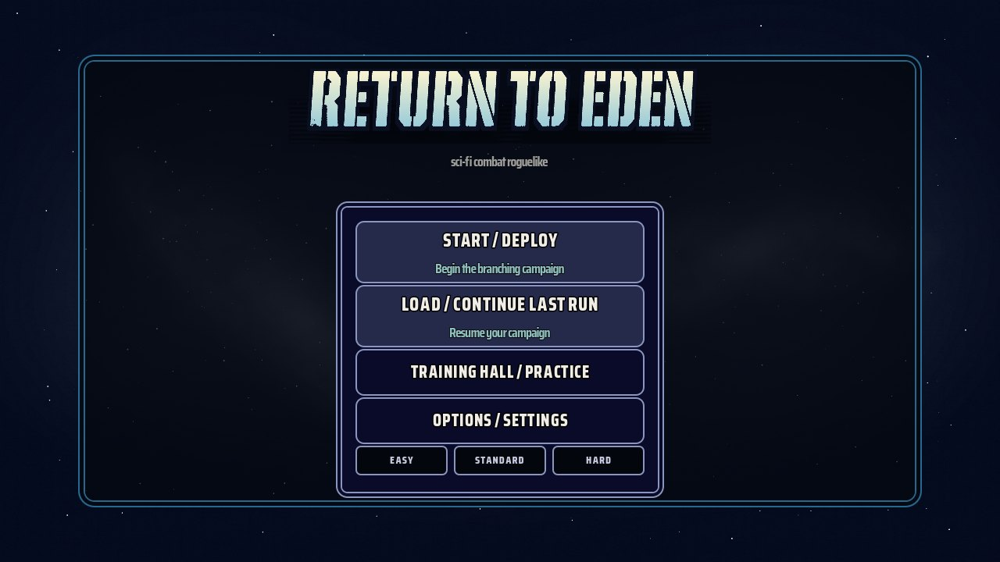

Menu / Start screen
BUILT · DIFFERSCURRENT — live build (local)

STYLE GUIDE — menu-board.jpg

Palette, typography, frame geometry, title and button set are landed and measured. The remaining gap is the flanking character illustration and the board's extra chrome.
- DONE Return-to-Eden title, gradient fill, 3× directional border, stencil cuts
- DONE Lowercase tagline, Saira Condensed typography, 370×80 / 370×60 buttons, 118×38 difficulty chips
- DONE Star field backdrop, outer + inner double-line frames
- TODO Board flanks the panel with marine/alien key art — current build has none
- TODO Board shows top/bottom HUD strips (currency, shields) — absent